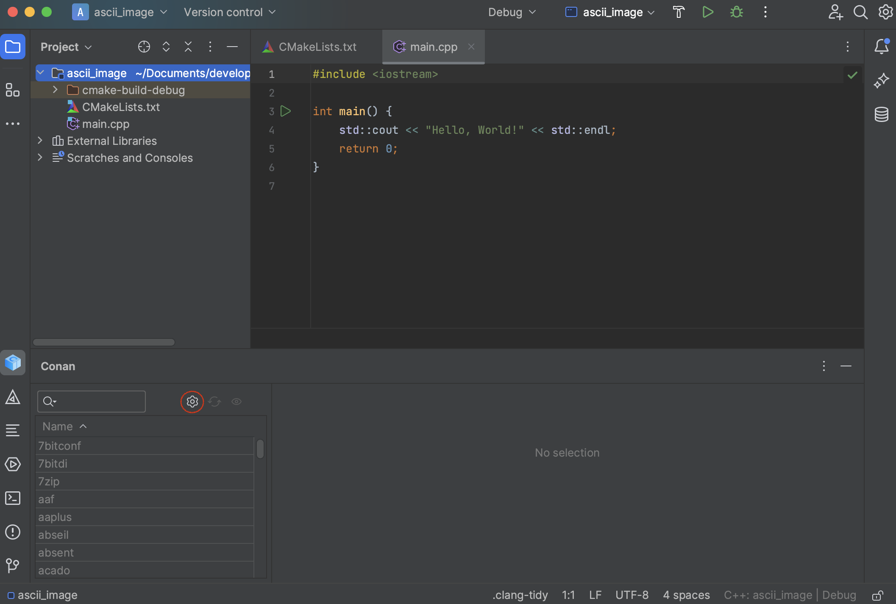
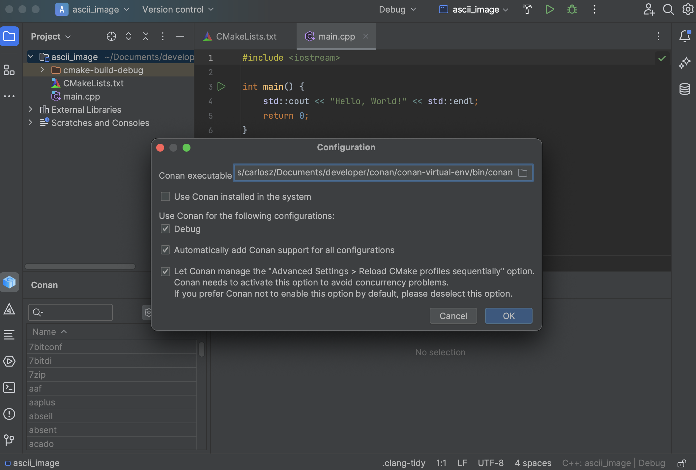

CLion¶
CLion¶
简介¶
There’s a plugin available in the JetBrains Marketplace that’s compatible with CLion versions higher than 2022.3. With this plugin, you can browse Conan packages available in Conan Center, add them to your project, and install them directly from the CLion IDE interface.
This plugin utilizes cmake-conan, a CMake dependency provider
for Conan. It injects conan_provider.cmake using the
CMAKE_PROJECT_TOP_LEVEL_INCLUDES definition. This dependency provider translates the
CMake configuration to Conan. For instance, if you select a Debug profile in CLion,
Conan will install and use the packages for Debug.
Bear in mind that cmake-conan activates the Conan integration every time CMake calls
find_package(). This means that no library will be installed until the CMake configure
step runs. At that point, Conan will attempt to install the required libraries and build
them if necessary.
Also, note that dependency providers are a relatively new feature in CMake. Therefore, you will need CMake version >= 3.24 and Conan >= 2.0.5.
Installing the plugin¶
To install the new Conan CLion plugin, navigate to the JetBrains marketplace. Open CLion, go to Settings > Plugins, then select the Marketplace tab. Search for the Conan plugin and click on the Install button.

After restarting CLion, a new “Conan” tool tab will appear at the bottom of the IDE.
Configuring the plugin¶
Open a CMake project or create a new one in CLion. Then, go to the “Conan” tool tab at the bottom of the IDE. The only enabled action in the toolbar of the plugin will be the one with the “wheel” (configuration) symbol. Click on it.

The first thing you should do is configure the Conan client executable that will be used. You can point to a specific installation in an arbitrary location on your system, or you can select “Use Conan installed in the system” to use the system-level installation.

Several options are marked as default. Let’s review them:
You’ll see checkboxes indicating which configurations Conan should manage. In our case, since we only have the Debug configuration, it’s the only one checked. Below that, “Automatically add Conan support for all configurations” is checked by default. This means you don’t need to manually add Conan support to new build configurations; the plugin will do it automatically.
There’s also a checkbox allowing Conan to modify the default CLion settings and run CMake sequentially instead of in parallel. This is necessary because the Conan cache isn’t concurrent yet in Conan 2.
If you’re using the Conan plugin, you typically wouldn’t uncheck these options. After setting your preferences, click the OK button to finalize the configuration.
Note: At this point, CLion will run the configure step for CMake automatically. Since the plugin sets up the conan.cmake dependency provider, a warning will appear in the CMake output. This warning indicates that we haven’t added a find_package() to our CMakeLists.txt yet. This warning will disappear once we add the necessary find_package() calls to the CMakeLists.txt file.
After the initial configuration, you’ll notice that the list of libraries is enabled. The “update” and “inspect” buttons are also active. We’ll explain these in detail later.
Using the plugin¶
With the plugin configured, you can browse available libraries and install them from CLion. For example, if you want to use libcurl to download an image from the Internet, navigate to the library list and search for libcurl. Information on how to add it to CMake will be displayed, along with a “Use in project” button. Select the version you want and click the button.

If you click on the “eye” (inspect) icon, you’ll see all the libraries added to the project (assuming you added more than one). This view includes basic target information for CMake and the necessary code snippets to integrate them into CMake.

Conan stores information about the used packages in a conandata.yml file in your project folder. This file is read by a conanfile.py, which is also created during this process. You can customize these files for advanced plugin usage, but ensure you read the information in the corresponding files to do this correctly. Modify your CMakeLists.txt according to the instructions, which should look something like this:
cmake_minimum_required(VERSION 3.15) project(project_name) set(CMAKE_CXX_STANDARD 17)
find_package(CURL) add_executable(project_name main.cpp)
target_link_libraries(project_name CURL::libcurl)
After reloading the CMake project, you should see Conan installing the libraries in the CMake output tab.
参见
For more details, check the entry in the Conan blog about the plugin.